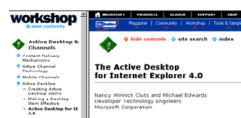
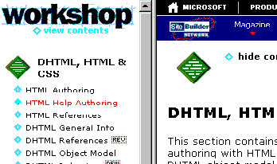
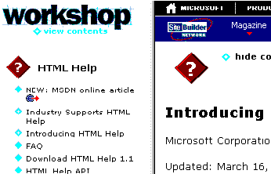

|
| ||
|
| ||
Robert Carter
MSDN Online Writer
Matt Oshry
Programmer Writer
Internet Client SDK
George Young
Web Developer Engineer
MSDN Online
August 25, 1998
Contents
Selective Frame Activation with NavFrame
Playing "Show" and "Hide"
Figuring out Where We Are
More as It Happens
Other parts in this series
Introduction and Overview
NavBar: Dynamic Menu Generation
Other Special Features and Hacks
Frame-switching is the other major new innovation of the MSDN Online site. It's our way of letting users selectively activate the left navigation frame, and is available to visitors that use Internet Explorer 4.0 and above on either the Windows or UNIX platforms. Frame-switching lets viewers see two additional levels of content and anchor their navigation to one particular file.

Figure 1. Workshop article with left frame activated
Note a few things in the graphic above. First, the left frame reveals two levels of content within each Workshop area. Mouseovers are orange. The blue diamonds with a plus inside signify that additional content is underneath. Clicking the icon or its associated text will reveal the next level; if the level is already shown, it will be retracted. The solid blue diamond and orange dot graphics indicate a destination page; clicking them will pull up the referenced page in the right-hand frame. If the link is to a remote site, it will also display a leaving-MSDN Online icon.
Also, note the bold text in the left frame. In the graphic shown, the bold-face item ("Content Delivery Mechanisms") matches the article on display in the right frame. This is particularly useful if you are reading this article and want to follow any of the links it references. As long as those links are within the Workshop (so we don't have to dump the frameset), the article you started from will remain bold-faced in the left pane. If you find another article you want to use as your anchor, you can select the "hide contents" link in the right-hand frame, and then click the "show contents" link to regain the TOC. (Ahhh, the "show contents" / "hide contents" functions; they make for an interesting couple of stories, which we'll get to in a bit.) Soon, we'll add an icon that synchronizes the TOC frame with your current article, so you won't have to click twice (we're always trying to save you time and effort, you know.) The name of your current article will appear bold-faced in the newly reactivated left frame.
With NavFrame, as with NavBar, we were juggling multiple agendas. Our main goal was to ease the navigation and use of MSDN Online for our readers. Activated, NavFrame would reveal reveal multiple levels of the MSDN Online site hierarchy to help readers find the information they wanted. De-activated, it would expand the viewable area of the articles themselves, and eliminate the white space that plagues any frame-based (or table-based) design and wreaks havoc for those limited to 640x480-resolution.
We also wanted to modify or extend NavFrame to accommodate the growing universe of MSDN Online coverage areas. (As you may know, the MSDN Online universe extends from Workshop to include Magazine, Member Community, Specs & Standards, HTML Help, HTML Agent, Training, and the Tools & Samples area.) We wanted to make the updating process simple enough to avoid further flustering our already-harried site producers (primarily editors, whose job titles bely the amount of work they do to post our pages).
The challenge of coding NavFrame was twofold. First, how to administer the code and the navigation display correctly across all the different sub-areas within MSDN Online? Second, how to determine which of the three possible browser versions of a page to send when the contents (either "show" or "hide") button was clicked?
Take a step back and think about it for a second. Remember, HTTP is "stateless". There's no way the server knows in advance that when a visitor clicks the hide contents button that 1) they were in the Workshop Content & Component Delivery section, or 2) that the frameset was active and they want to hide it. What's more, unlike the NavBar, where only two versions of the page were necessary (Internet Explorer 4.0+ or "downlevel"), with NavFrame we need three versions (Internet Explorer 4.0+, "downlevel", and "downlevel" without JavaScript).
So what to do? We used code to figure out as much as we could before sending a request to the server.
Like NavBar, NavFrame is housed in a one-row table in two functionally identical cells (one houses a graphic; the other, text).
<TD CLASS="clsTDNL" HEIGHT="25" ALIGN="left" WIDTH="17"> <A ONCLICK="return contents_click()" href="/workshop/contents.htm" ID="TOCImage"> <IMG CLASS="clsLeftMenu" ID="i_TOC" src="/msdn-online/shared/navlinks/graphics/d-hollow8.gif" WIDTH="17" HEIGHT="13" BORDER="0"></A> </TD> <TD CLASS="clsTDNL" NOWRAP> <A ONCLICK="return contents_click()" CLASS="clsLeftMenu" href="/workshop/contents.htm" ID="TOC">contents</A> </TD>
If you look at the NavFrame table cell while the page is loading, it will display as shown in the following graphic, which is consistent with the "contents" string indicated in the second cell from the code above.
Figure 2. NavFrame display while page is loading
If you have a downlevel browser, your display will remain that way. If you are using Internet Explorer 4.0 and up, when the page finishes loading the display will update to reflect whether the contents frame is open (where it will read "hide contents") or closed ("show contents").
Figure 3. NavFrame display in Internet Explorer 4.0 when left TOC frame is active
The code below, from the included file toc.js, figures out whether the contents frame is already open -- and if so, replaces "contents" with "hide contents".
var sPath = location.pathname.toLowerCase();
if (window.top != self) { // in frameset
if (window.top.frames.length > 1 && window.top.frames[0].name=="TOC") {
TOC.href = location.pathname;
TOC.target = "_top";
if (sPath.indexOf("samples")>-1) {
TOC.innerText = "hide samples list";
}
else {
TOC.innerText = "hide contents";
}
if (typeof(TOCImage) == 'object') {
TOCImage.href = location.pathname;
TOCImage.target = "_top";
}
}
}
else {
TOC.href = sframedhref;
if (sPath.indexOf("samples")>-1) {
TOC.innerText = "show samples list";
}
else {
TOC.innerText = "show contents";
}
if (typeof(TOCImage) == 'object') {
TOCImage.href = sframedhref;
}
}
TOC.style.visibility = "visible";
}
The first two lines of code determine whether the page is operating within one of the Workshop framesets. Line 1 asks whether we're in a frameset. Line 2 is a conditional AND test. If there is more than one frame, and the first frame window in the frameset has the name "TOC" (the name of the left frame in the Workshop frameset), then we're in one of the Workshop framesets. We test for a framecount of greater than one because many of the samples in the Tools & Samples area of the Workshop use an IFRAME for display, which would give a framecount of one even if it were displayed without the left TOC frame.
The text replacement code also uses a conditional test, because there are two text options. In the Tools & Samples area, instead of displaying a list of content items, the left frame displays a list of samples. Accordingly, instead of displaying "show contents"/"hide contents" for NavFrame, we display "show samples list"/"hide samples list". The conditional statement checks whether the visitor is viewing samples by checking the URL for the phrase "samples" (all samples are stored in a like-named directory).
(By the way, George insisted that we caveat this section by stating it's a work in progress. The naming conventions, and the fact that segments of this code are better-handled elsewhere, caused him great duress when it came to discussing the code's functions in so public a forum.)
For those times when a visitor wants to show NavFrame, we need to know enough about where they are within Web Workshop to display the correct table of contents. Any area that requires a table of contents has in its root directory a file called contents.htm. The job for NavFrame is to construct the complete URL so that c-frame.htm, the file that instantiates the frameset, can place the table-of-contents file (which the code in c-frame.htm below calls sTocURL) in the left frame and the active document in the right (sContentURL).
sFrameset = "<FRAMESET COLS='195,*'><FRAME NAME=TOC src="
+ sTocURL
+ " MARGINWIDTH='0'><FRAME NAME=TEXT src="
+ sContentURL
+ " MARGINWIDTH='0'></FRAMESET>";
document.write(sFrameset);
Fifteen of the sixteen major areas listed in the left frame of the Workshop home page each merit their own table of contents (Design, as mentioned before, retains its singular look). For the most part, these areas also correspond to a file hierarchy on our servers (for example, the content in the Streaming & Interactive Media area is stored in \workshop\imedia\). A few areas (HTML Help. Microsoft Agent) merit their own TOCs, but are activated from within other Workshop areas (see graphic below). Other areas don't follow the file hierarchy mentioned (the XML and Standards areas). And so on. Always exceptions.

Figure 4. Although HTML Help Authoring falls within the DHTML, HTML, & CSS area ...

Figure 5. ... it displays its own TOC pane when selected
The problem we faced was setting up some code that could figure out how to programmatically construct the URL specific to each area, including the exception areas.
This brings us to the getTocURL() function, which pieces our URL together. The first part declares some default values and variables. sSlash is assigned a string value of "/" if the user is online, "\\" otherwise (the whole offline issue is discussed later). sTocHref is set by default to /workshop/contents.htm, the default contents frame for Workshop, and sContentHref, which was passed to getTocURL() as a parameter, refers to the URL of the referring page; we set all values in the URL to lowercase to ease parsing.
function getTocURL(sContentHref) {
var sSlash = location.href.indexOf("http://") != -1 ? "/" : "\\";
var sTochref = "/workshop/contents.htm";
sContenthref = scontenthref.tolowercase();
var aSpecialFolders = new Array("htmlhelp","agent","jdhtml");
for (var i=0;i<aSpecialFolders.length;i++) {
if (sContentHref.indexOf(sSlash + aSpecialFolders[i] + sSlash) > -1) {
sTochref = scontenthref.substring(0,scontenthref.indexof
(aSpecialFolders[i])
+ aSpecialFolders[i].length + 1) + "contents.htm";
return sTocHref;
}
}
getTocURL() functions by sytematically eliminating all the exceptions to constructing the URL of the TOC page. We'll subject you to only the first exception-handling code to give you a sense of how it works. The rest you'll have to puzzle through on your own.
The first exception we process deals with the situation covered in the graphic above, when an otherwise second-level entry points to another TOC frameset, instead of an article or an expandable heading. First, we declare a new array variable, aSpecialFolders, each entry of which refers to an area that needs a second-level TOC. (Note that we reference what distinguishes the areas in the URL rather than what we call the section; that is, we enter "htmlhelp" because that is how it appears on our server's file structure, and therefore the URL, rather than the "HTML Help Authoring" area.) We then step through a loop for each entry in the array, and test to see whether the URL that was passed includes that directory. If so, we assign sTocHref all of sContentHref up until the character after ("/") of the special directory, and discard the rest, replacing it with contents.htm instead.
Sound confusing? It is. Just ask George, who had to tolerate more than his share of visits from an oft-bewildered Robert. Thankfully, Robert perservered in the face of numbing confusion, helped by the fact that George was showing the World Cup through a computer in his office.
Perhaps this example will help clarify. Let's assume you are perusing a file in the HTML Help Authoring area -- say, an article about handling Information Types ( http://www.microsoft.com/workshop/author/htmlhelp/infotypes.asp). You want to see what else is available in that section, so you select show contents with your mouse.
Pressing show contents activates getTocURL(). The value passed via the variable showContentHref is the article's URL. getTocURL() assembles the string "/htmlhelp/" (sSlash + aSpecialFolders[i] + sSlash) and scans the URL for /htmlhelp/. Since /htmlhelp/ is in the URL, we start assembling sTocHRef.
We'll take the assembly of sTocHRef in turn. First we take a subset of the sContentHref string. The "0" immediately after the first parentheses
sTochref = scontenthref.substring(0,sContentHref.indexOf(aSpecialFolders[i])
states that we'll start at the beginning of the string (the "h" of the "http" statement). The rest of the parenthetical statement is all about coming up with an integer value to determine the end of the string. sContentHref.indexOf(aSpecialFolders[i]) states that we'll travel 41 characters up the http://www.microsoft.com/workshop/author/htmlhelp/infotypes.asp string before we encounter the first character of the aSpecialFolders[i] value, the slash "/" preceding "htmlhelp".
Next, we add as many characters as there are in the array variable (8). Then, just to get us over the hump of the next slash, we'll add one more character. Now we know the substring of sContentHref to pluck: We start at the first character and continue until the fiftieth (41+ 8+1). To complete the task, we add the string "contents.htm".
We've outlined the major functionality of NavFrame by describing the show contents / hide contents feature. There are several other features we'd like to discuss, such as the left-frame functionality -- but frankly, the code needs to be better. In attempting to write up the existing version, we grew frustrated trying to rationalize some earlier coding decisions that were made.
Instead, we'll do it right, and add this section later. Meanwhile, we recommend continuing with the Code Tour series. In the next article, Other Special Features and Hacks, we discuss two of our most interesting innovations, DynaBinding and event caching, as well as one of our, um, workarounds, hackURL() -- a cautionary tale of the perils of designing for offline browsing.
Did you find this material useful? Gripes? Compliments? Suggestions for other articles? Write us!
© 1999 Microsoft Corporation. All rights reserved. Terms of use.